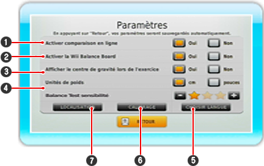
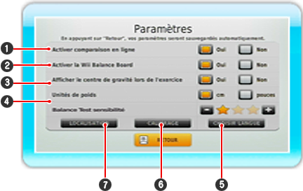

Cet espace vous permet d'activer certains paramètres en les pointant à l'aide de la télécommande Wii. Appuyez ensuite sur  . Le paramètre est actif quand le champ s'affiche sur fond orange.

. Le paramètre est actif quand le champ s'affiche sur fond orange.

| 1 |
L'accès au comparatif en ligne est possible si la fonction connexion Wi-Fi Nintendo de votre console est activée.
|
| 2 |
Activez votre Wii Balance Board ici.
|
| 3 |
Décidez si vous voulez voir votre centre de gravité en cours d'exercice.
|
| 4 |
Choisissez l'unité de mesure qui vous convient.
|
| 5 |
Permet de changer la langue du logiciel.
|
| 6 |
Utilisez Calibrage pour calibrer votre Wii Balance Board à tout moment.
|
| 7 |
Dans Localisation, vous disposez de trois lignes de texte où vous pourrez entrer votre nom ou votre lieu de résidence. Le texte s'affichera dans le menu principal.
|